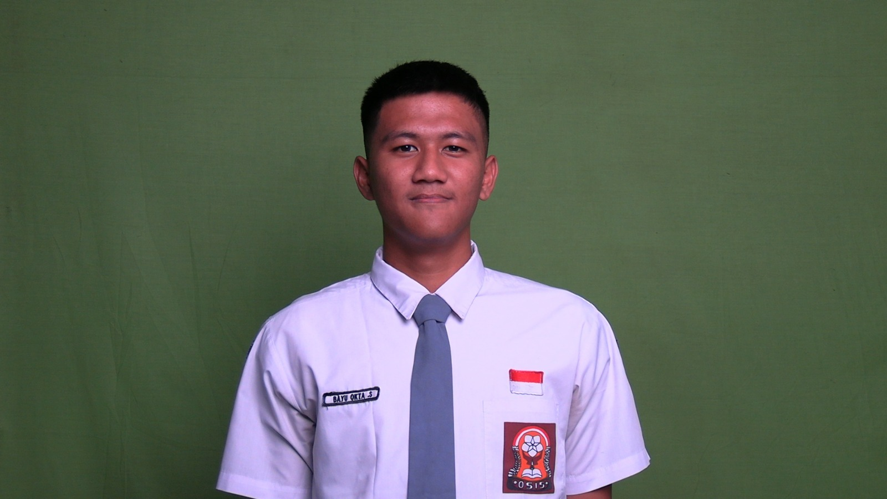

First Chapter ✨
Simpan momen kecil yang punya cerita besar.
PAGE 01 / 08

Saya mengerjakan desain antarmuka dan website untuk bisnis kecil sampai startup. Saya suka proyek yang rumit di balik layar tapi terasa sederhana saat dipakai.
Di luar kerja, saya menulis catatan desain dan mencari kedai kopi dengan wifi yang stabil, agar bisa bermain game dengan lancar.
Satu buku kecil, banyak cerita.
Simpan momen kecil yang punya cerita besar.